Central AGN with CR in a binary galaxy cluster merger — Domínguez-Fernández et al. 2024
Opening-angle diagnostic: brightest-pixel-per-half ("maxima", cyan X) and furthest-pair ("longest baseline", red dot, connected to the BH) lobe detection at σ = 3, animated across the qualifying snaps after jet launch. The direction where the line of sight runs along the jet axis is marked LOS ∥ jet — only one blob is visible there, so no opening angle is drawn.
r0p2_theta10 — R=1:5, θ=10° | jet ignition: 50 Myr | initial jet direction: x̂
r0p2_theta10_start1000Myr — R=1:5, θ=10° | jet ignition: 1 Gyr | initial jet direction: x̂
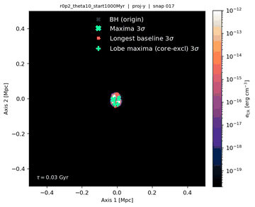
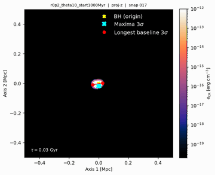
r0p2_theta10_start2000Myr — R=1:5, θ=10° | jet ignition: 2 Gyr | initial jet direction: x̂
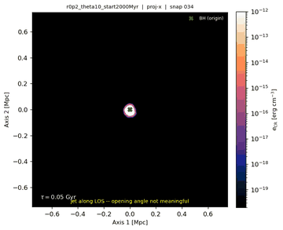
r0p2_theta10_start5000Myr — R=1:5, θ=10° | jet ignition: 5 Gyr | initial jet direction: x̂
r0p2 — R=1:5, θ=20° | jet ignition: 50 Myr | initial jet direction: x̂
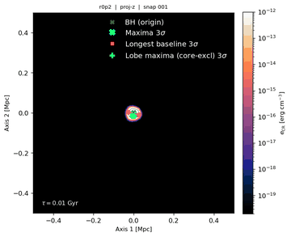
r0p2_start1000Myr — R=1:5, θ=20° | jet ignition: 1 Gyr | initial jet direction: x̂
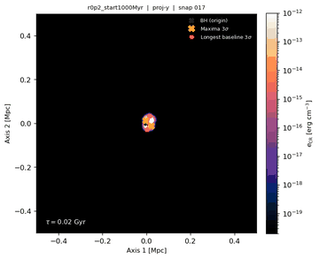
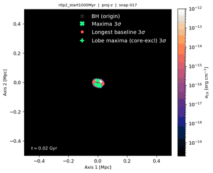
r0p2_start2000Myr — R=1:5, θ=20° | jet ignition: 2 Gyr | initial jet direction: x̂
r0p2_start5000Myr — R=1:5, θ=20° | jet ignition: 5 Gyr | initial jet direction: x̂
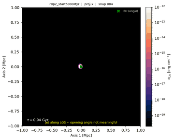
r0p5_theta10 — R=1:2, θ=10° | jet ignition: 50 Myr | initial jet direction: x̂
r0p5_theta10_start1000Myr — R=1:2, θ=10° | jet ignition: 1 Gyr | initial jet direction: x̂
r0p5_theta10_start2000Myr — R=1:2, θ=10° | jet ignition: 2 Gyr | initial jet direction: x̂
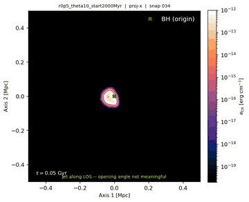
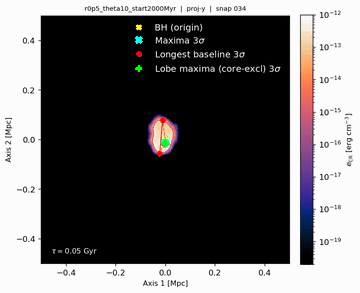
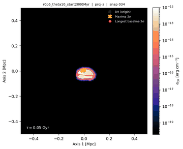
r0p5_theta10_start5000Myr — R=1:2, θ=10° | jet ignition: 5 Gyr | initial jet direction: x̂
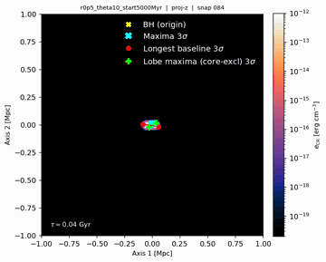
r0p5 — R=1:2, θ=20° | jet ignition: 50 Myr | initial jet direction: x̂
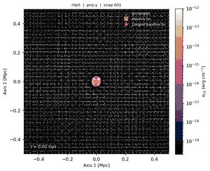
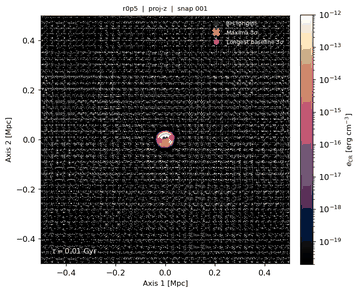
r0p5_start1000Myr — R=1:2, θ=20° | jet ignition: 1 Gyr | initial jet direction: x̂
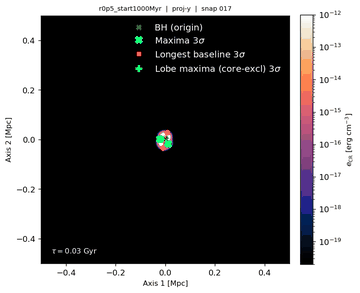
r0p5_start2000Myr — R=1:2, θ=20° | jet ignition: 2 Gyr | initial jet direction: x̂
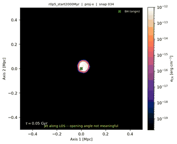
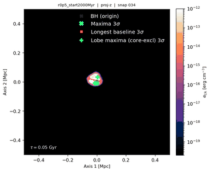
r0p5_start5000Myr — R=1:2, θ=20° | jet ignition: 5 Gyr | initial jet direction: x̂
r0p2_theta10_jetdir-y — R=1:5, θ=10° | jet ignition: 50 Myr | initial jet direction: ŷ
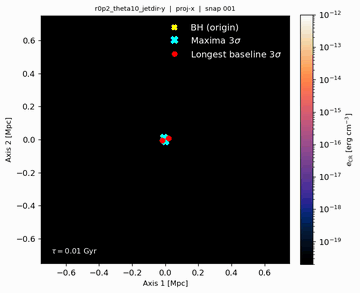
r0p2_theta10_start1000Myr-y — R=1:5, θ=10° | jet ignition: 1 Gyr | initial jet direction: ŷ
r0p2_theta10_start2000Myr-y — R=1:5, θ=10° | jet ignition: 2 Gyr | initial jet direction: ŷ
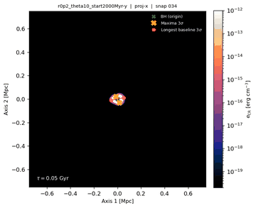
r0p2_theta10_start5000Myr-y — R=1:5, θ=10° | jet ignition: 5 Gyr | initial jet direction: ŷ
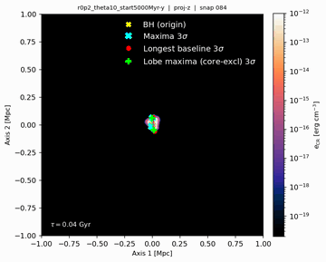
r0p2_jetdir-y — R=1:5, θ=20° | jet ignition: 50 Myr | initial jet direction: ŷ
r0p2_start1000Myr-y — R=1:5, θ=20° | jet ignition: 1 Gyr | initial jet direction: ŷ
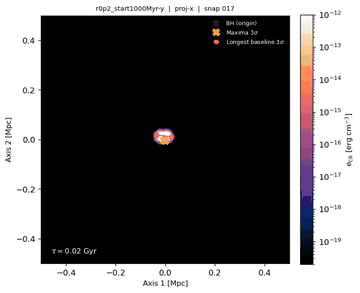
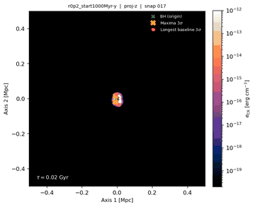
r0p2_start2000Myr-y — R=1:5, θ=20° | jet ignition: 2 Gyr | initial jet direction: ŷ
r0p2_start5000Myr-y — R=1:5, θ=20° | jet ignition: 5 Gyr | initial jet direction: ŷ
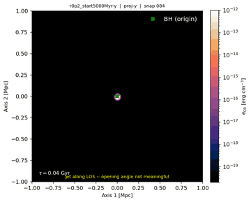
r0p5_theta10_jetdir-y — R=1:2, θ=10° | jet ignition: 50 Myr | initial jet direction: ŷ
r0p5_theta10_start1000Myr-y — R=1:2, θ=10° | jet ignition: 1 Gyr | initial jet direction: ŷ
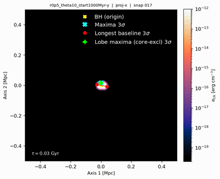
r0p5_theta10_start2000Myr-y — R=1:2, θ=10° | jet ignition: 2 Gyr | initial jet direction: ŷ
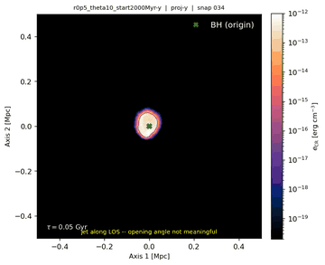
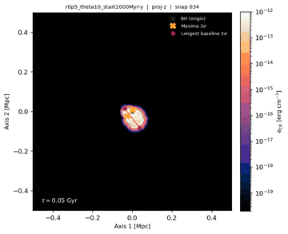
r0p5_theta10_start5000Myr-y — R=1:2, θ=10° | jet ignition: 5 Gyr | initial jet direction: ŷ
r0p5_jetdir-y — R=1:2, θ=20° | jet ignition: 50 Myr | initial jet direction: ŷ
r0p5_start1000Myr-y — R=1:2, θ=20° | jet ignition: 1 Gyr | initial jet direction: ŷ
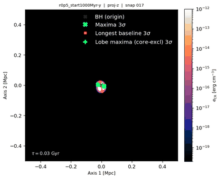
r0p5_start2000Myr-y — R=1:2, θ=20° | jet ignition: 2 Gyr | initial jet direction: ŷ
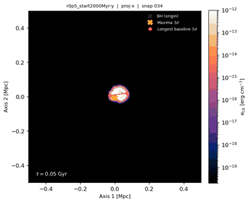
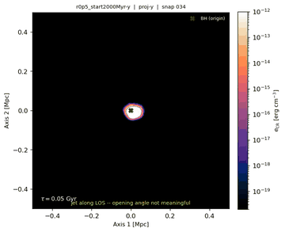
r0p5_start5000Myr-y — R=1:2, θ=20° | jet ignition: 5 Gyr | initial jet direction: ŷ
r0p2_theta10_jetdir-z — R=1:5, θ=10° | jet ignition: 50 Myr | initial jet direction: ẑ
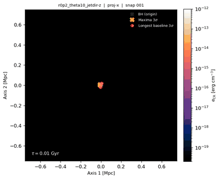
r0p2_theta10_start1000Myr-z — R=1:5, θ=10° | jet ignition: 1 Gyr | initial jet direction: ẑ
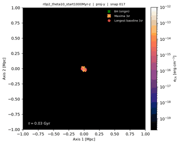
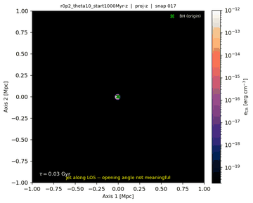
r0p2_theta10_start2000Myr-z — R=1:5, θ=10° | jet ignition: 2 Gyr | initial jet direction: ẑ
r0p2_theta10_start5000Myr-z — R=1:5, θ=10° | jet ignition: 5 Gyr | initial jet direction: ẑ
r0p2_jetdir-z — R=1:5, θ=20° | jet ignition: 50 Myr | initial jet direction: ẑ
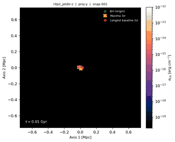
r0p2_start1000Myr-z — R=1:5, θ=20° | jet ignition: 1 Gyr | initial jet direction: ẑ
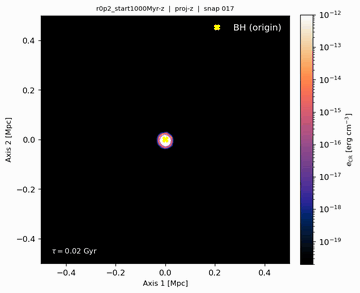
r0p2_start2000Myr-z — R=1:5, θ=20° | jet ignition: 2 Gyr | initial jet direction: ẑ
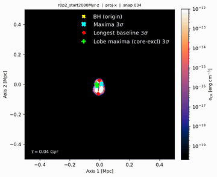
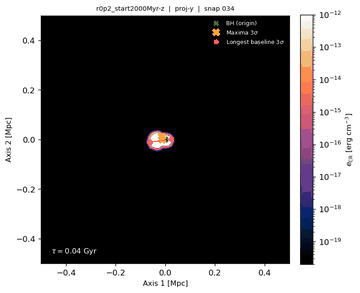
r0p2_start5000Myr-z — R=1:5, θ=20° | jet ignition: 5 Gyr | initial jet direction: ẑ
r0p5_theta10_jetdir-z — R=1:2, θ=10° | jet ignition: 50 Myr | initial jet direction: ẑ
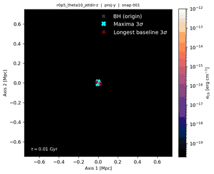
r0p5_theta10_start1000Myr-z — R=1:2, θ=10° | jet ignition: 1 Gyr | initial jet direction: ẑ
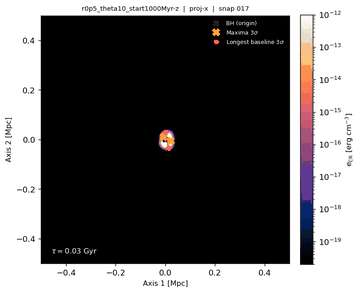
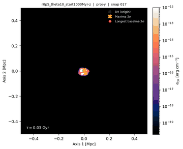
r0p5_theta10_start2000Myr-z — R=1:2, θ=10° | jet ignition: 2 Gyr | initial jet direction: ẑ
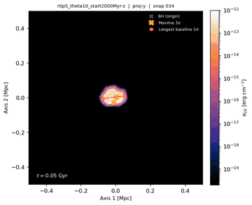
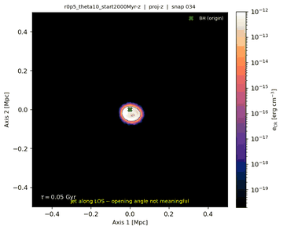
r0p5_theta10_start5000Myr-z — R=1:2, θ=10° | jet ignition: 5 Gyr | initial jet direction: ẑ
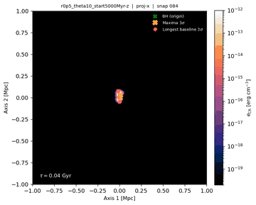
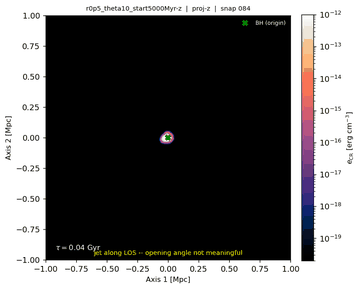
r0p5_jetdir-z — R=1:2, θ=20° | jet ignition: 50 Myr | initial jet direction: ẑ
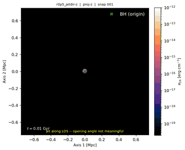
r0p5_start1000Myr-z — R=1:2, θ=20° | jet ignition: 1 Gyr | initial jet direction: ẑ
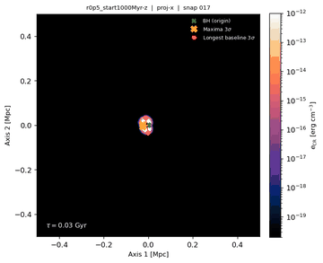
r0p5_start2000Myr-z — R=1:2, θ=20° | jet ignition: 2 Gyr | initial jet direction: ẑ
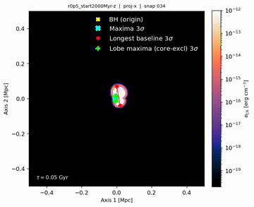
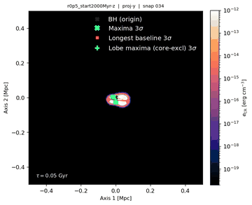
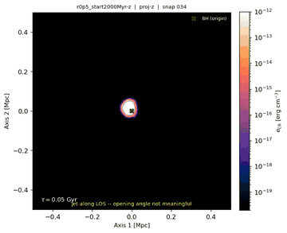
r0p5_start5000Myr-z — R=1:2, θ=20° | jet ignition: 5 Gyr | initial jet direction: ẑ
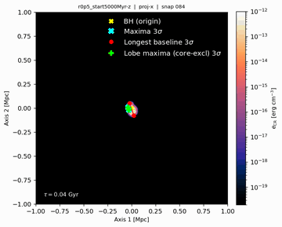
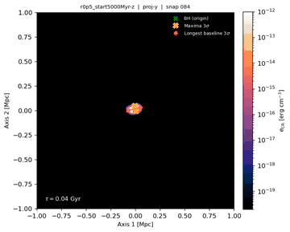
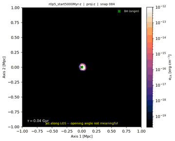